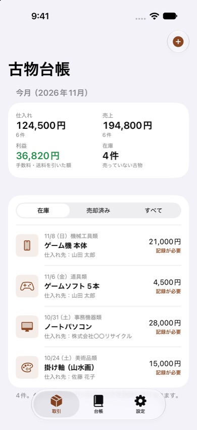
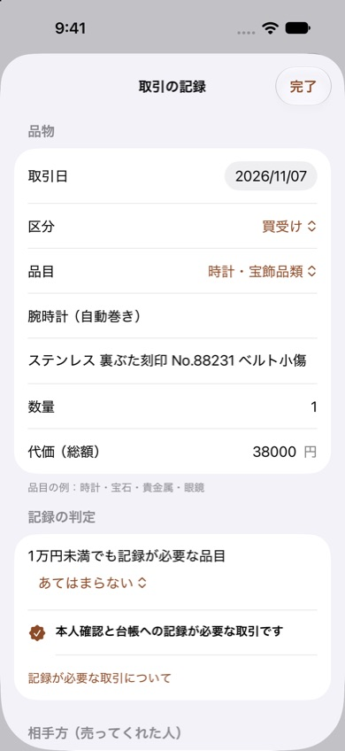

古物台帳
古物の買受け・交換・委託を記録する、古物商のためのiPhone・iPadアプリです。紙やExcelの古物台帳を、スマホでの入力に置きかえます。
iPhone・iPad（iOS 17以降）・無料（広告なし）・CSV書き出しはプロ版


できること
- 記録の判定：代価が1万円以上か、1万円未満でも記録が必要な品目かを自動で判定し、足りない項目を知らせます。
- 台帳の項目：取引年月日、区分（買受け・交換・委託）、13の品目、品名、数量、特徴、代価、相手方の住所・氏名・職業・年齢、確認方法と書類の番号。
- 払出しの記録：美術品類・時計・宝飾品類・自動車・バイクを売ったときの、相手方の記録。
- 台帳のPDF：受入れ・払出しの台帳を、月ごと・年ごとにA4横のPDFで書き出せます（古物商の名前と許可番号入り）。
- 仕入れ・売上・利益：売ったら売値と手数料・送料を入れるだけで、利益と今月の集計がわかります。
- よく取引する相手方の登録：生年月日を入れておけば、取引の日の年齢も自動で入ります。
- CSV（プロ版）：台帳と売上・利益の一覧をExcelで開けるCSVに書き出せます。
古物台帳の書き方
記録する項目、1万円未満でも記録が必要な品目、保存期間は、古物台帳の書き方と無料テンプレートにまとめています（Excel・印刷用の台帳つき）。
よくある質問
どんな人が使えますか
古物商の許可を持つ個人や小さなお店の方、せどり・転売で中古品を仕入れる方を想定しています。よく取引する相手方を登録しておくと、毎回の入力を省けます。
記録が必要かどうかは自動でわかりますか
代価の総額が1万円以上か、1万円未満でも記録が必要な品目（バイク・ゲームソフト・CD/DVD・書籍、エアコンの室外機・電線など）かどうかで、記録が必要な取引を表示します。売ったときに記録が必要な品目（美術品類・時計・宝飾品類・自動車・バイク）も判定します。
記録はどこに保存されますか
この端末の中だけに保存し、外部には送りません。定期的に「台帳」からPDFで書き出して、パソコンなどにも保存しておくと安心です。
無料で使えますか
取引の記録、記録の判定、台帳のPDFの書き出しは無料で、広告もありません。台帳と売上・利益の一覧をCSV（Excel）で書き出す機能は、プロ版（買い切り）で使えます。
このアプリは古物台帳の記録を助けるものです。法令の内容や必要な記録は、所轄の警察署や公式の情報で確認してください。
お問い合わせ
メール: tanacount.support@gmail.com
返信までお時間をいただく場合があります。